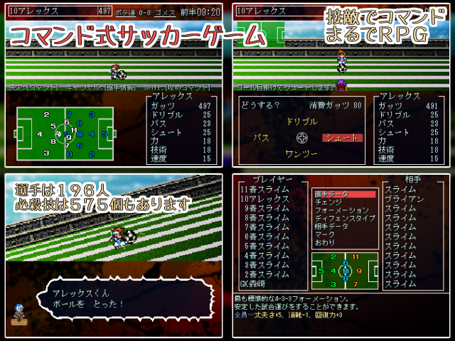
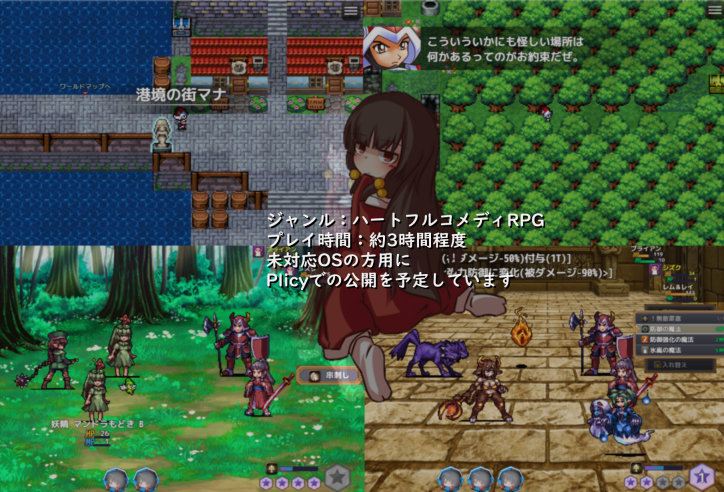
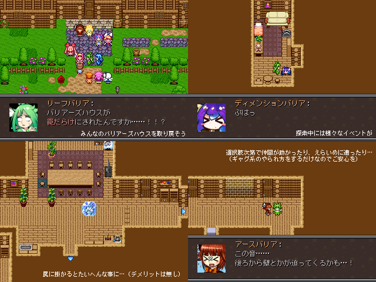
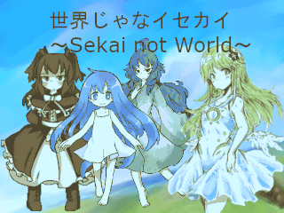
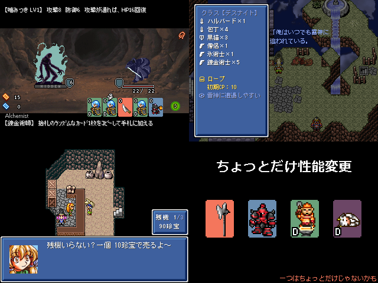
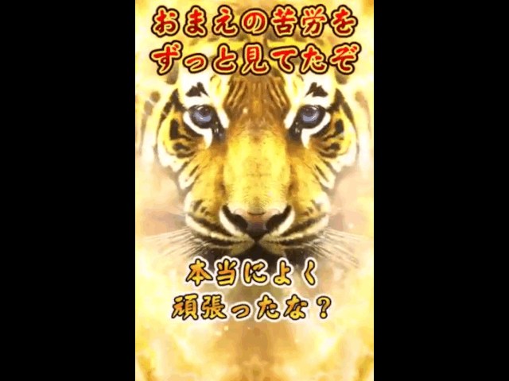
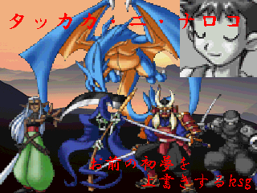
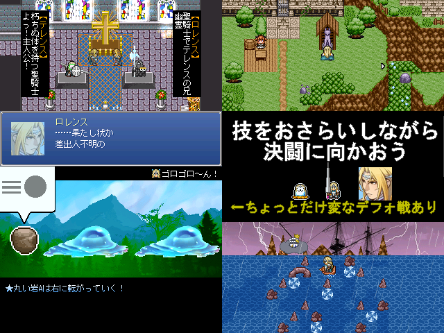
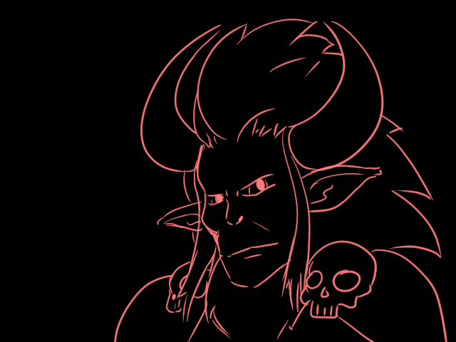

紅白対決
紅組 ： 4860.50 pts
白組 ： 4096.05 pts
――以上より、VIPRPG紅白2024の勝者は 紅組 となります。
入賞者発表
今回、総合得点上位5名、または各部門上位3名のいずれかに入賞された方は下記の通りです。
入賞者にはそれぞれ入賞部門に応じた賞状を送付いたしました。
複数部門に入賞した方は、入賞した部門すべての賞状を送付しています。
賞状はSNSなどで公開しても問題ありません。
入賞された皆さん、おめでとうございます。
| 11 | キャプテンもしもACE | ||||||
 | |||||||
| 受賞内容 | 総合優勝 技術部門・演出部門 優勝 ストーリー部門・ユニーク部門 第二位 | ||||||
| 作者コメント | 投票や、プレイ、コメントをくださった皆様、そして管理人様に心より感謝申し上げます。 | ||||||
| 2 | セドナの捨舟 | ||||||
 | |||||||
| 受賞内容 | 総合準優勝 ストーリー部門・演出部門・ユニーク部門 優勝 技術部門・エロス部門 第二位 | ||||||
| 作者コメント | セドナの捨舟を遊んでくださった方々及び投票してくださった方々。 | ||||||
| 17 | バリアーズトラップハウス | ||||||
 | |||||||
| 受賞内容 | 総合第三位 エロス部門 第二位 演出部門 第三位 | ||||||
| 作者コメント | どうも、牧場の牛肉です | ||||||
| 12 | カマソッソの音楽 | ||||||
| 受賞内容 | 総合第四位 ストーリー部門 第二位 | ||||||
| 作者コメント | やったぜ(投稿者∶変態糞たんち)！ | ||||||
| 9 | 世界じゃなイセカイ | ||||||
 | |||||||
| 受賞内容 | 総合第五位 | ||||||
| 作者コメント | 紅白入賞…！ | ||||||
| 13 | 裏Role | ||||||
 | |||||||
| 受賞内容 | 技術部門 第三位 | ||||||
| 作者コメント | プレイしていただいた方々ありがとうございます 暇つぶしにこの文字列の中から猿を探してみてください 遠蝯蝯蝯蝯猴遠猨遠猴蝯猴蝯猴遠猨遠猴猴蝯遠蝯遠ファルコン猴蝯猨猨猨猨蝯蝯遠猴猴蝯猴猴猨蝯猨猴遠猨遠遠 | ||||||
| 26 | ゴールドタイガー | ||||||
 | |||||||
| 受賞内容 | カオス部門 優勝 | ||||||
| 作者コメント | おまえ達の苦労をずっと見てたぞ | ||||||
| 33 | アナルウォッシング | ||||||
| 受賞内容 | カオス部門 第二位 | ||||||
| 投票コメント | |||||||
| 作者コメント | 神に感謝 | ||||||
| 30 | タッカカ・ニ・ナロコ | ||||||
 | |||||||
| 受賞内容 | カオス部門 第三位 | ||||||
| 作者コメント | 投票ありがとね！！！！！！！！！！！！！！！！！！！！！！！ | ||||||
| 1 | ホーリーナイト、ゴーウェスト | ||||||
 | |||||||
| 受賞内容 | ユニーク部門 第三位 | ||||||
| 作者コメント | 今作はシステム、ストーリー共に難産でした。 | ||||||
| 29 | 魔法擬人化を※※らせたくてACE | ||||||
 | |||||||
| 受賞内容 | エロス部門 優勝 | ||||||
| 作者コメント | プレイしていただいた皆様へ、ありがとうございました。 | ||||||
投票結果詳細
今回の投票結果を表形式で公開しました。
総合得点順に並んでいますが、総合得点が同じものはエントリーが早かった順になっています。
略称については下記の通りとなっています。
最優秀=総合部門(最優秀作品)票、優秀=総合部門(優秀作品)票、スト=ストーリー部門票、技術=技術部門票、
演出=演出部門票、ユニ=ユニーク部門票、混沌=カオス部門票、エロ=エロス部門票
| No | タイトル | 最優秀 | 優秀 | スト | 技術 | 演出 | ユニ | 混沌 | エロ | 総合得点 |
| 11 | キャプテンもしもACE | 30 | 28 | 15 | 44 | 30 | 14 | 3 | 2 | 1627.45 |
| 2 | セドナの捨舟 | 22 | 34 | 33 | 27 | 30 | 16 | 9 | 13 | 1597.65 |
| 17 | バリアーズトラップハウス | 4 | 15 | 7 | 6 | 14 | 10 | 6 | 13 | 545.85 |
| 12 | カマソッソの音楽 | 5 | 9 | 15 | 4 | 13 | 9 | 4 | 9 | 498.1 |
| 9 | 世界じゃなイセカイ | 7 | 10 | 14 | 1 | 1 | 9 | 0 | 2 | 414.4 |
| 27 | もしもン不思議の100階ダンジョン | 4 | 12 | 2 | 9 | 6 | 5 | 2 | 9 | 389.2 |
| 16 | ドラ子のふつうRPG | 2 | 13 | 8 | 1 | 7 | 10 | 1 | 8 | 359.8 |
| 4 | 子もちもちと不思議な仲間たち ReMZ | 1 | 13 | 5 | 1 | 6 | 9 | 4 | 11 | 339.65 |
| 31 | やみっちとライチのラブラばないデート＋ディベート | 0 | 5 | 11 | 0 | 12 | 6 | 8 | 5 | 267.3 |
| 13 | 裏Role | 0 | 13 | 0 | 19 | 2 | 3 | 0 | 0 | 257.6 |
| 26 | ゴールドタイガー | 0 | 1 | 1 | 5 | 3 | 4 | 26 | 0 | 221.1 |
| 46 | 劇的ラストバトル | 0 | 8 | 0 | 9 | 11 | 4 | 3 | 0 | 217.9 |
| 39 | 金リカ2v4 | 1 | 11 | 11 | 1 | 2 | 2 | 0 | 0 | 217.2 |
| 33 | アナルウォッシング | 0 | 1 | 6 | 0 | 3 | 2 | 18 | 8 | 195 |
| 30 | タッカカ・ニ・ナロコ | 0 | 2 | 0 | 3 | 8 | 3 | 17 | 0 | 182.9 |
| 1 | ホーリーナイト、ゴーウェスト | 2 | 2 | 1 | 2 | 3 | 12 | 1 | 0 | 169.8 |
| 29 | 魔法擬人化をアヘらせたくてACE | 0 | 1 | 1 | 1 | 1 | 1 | 4 | 20 | 162.4 |
| 3 | マコ ニュー・トランスレーション | 0 | 4 | 3 | 0 | 0 | 5 | 4 | 8 | 141.2 |
| 42 | 縛りにもならない縛りで「好きなキャラ100人で魔王把握」 | 3 | 4 | 1 | 0 | 0 | 1 | 0 | 3 | 140 |
| 21 | ゴメスの地獄大逃亡 | 2 | 2 | 0 | 0 | 0 | 5 | 8 | 0 | 136.6 |
| 32 | 好きキャラで100人把握with エクスピア連合王国 | 1 | 3 | 1 | 1 | 1 | 6 | 0 | 1 | 105.6 |
| 19 | MOSHIMO PARTY！ SEASON III | 0 | 3 | 8 | 0 | 1 | 2 | 0 | 1 | 90.8 |
| 36 | Crazy Rider β | 0 | 1 | 0 | 11 | 1 | 3 | 0 | 0 | 87.75 |
| 18 | ほしくずロンリネス | 0 | 3 | 6 | 0 | 0 | 4 | 0 | 0 | 80.6 |
| 5 | 魔王軍奮闘記 -もしも王国が謎の組織に乗っ取られたら- | 0 | 3 | 1 | 1 | 1 | 3 | 3 | 0 | 75 |
| 15 | BREAK BREAK | 0 | 1 | 0 | 7 | 2 | 3 | 0 | 0 | 70.7 |
| 24 | オカリンクエスト 第2章中編 | 0 | 1 | 2 | 1 | 0 | 4 | 2 | 0 | 55 |
| 28 | 禁止聖人 | 0 | 1 | 5 | 0 | 0 | 3 | 0 | 1 | 55 |
| 34 | 呪術師協会VS○○○○ | 0 | 0 | 1 | 0 | 2 | 1 | 3 | 2 | 45 |
| 37 | VTuberでサガフロごっこするゲーム v0.3 | 0 | 1 | 0 | 2 | 1 | 2 | 0 | 0 | 35 |
| 40 | へんしんアレックスにまつわるエトセトラ | 0 | 0 | 1 | 0 | 1 | 1 | 3 | 1 | 35 |
| 10 | 狂脂性ブラックサンダーJ | 0 | 0 | 0 | 0 | 0 | 4 | 1 | 0 | 25 |
| 44 | ドラ子の魔王把握50人 | 0 | 0 | 1 | 0 | 0 | 0 | 2 | 2 | 25 |
| 45 | 衛兵アレックス | 0 | 1 | 3 | 0 | 0 | 0 | 0 | 0 | 25 |
| 35 | もしもセルフコレクション | 0 | 0 | 3 | 0 | 1 | 0 | 0 | 0 | 20 |
| 6 | 2005~2024キャラ歴史まとめ | 0 | 0 | 0 | 1 | 0 | 0 | 1 | 0 | 10 |
| 8 | ラディーと愉快な仲間たち | 0 | 0 | 0 | 0 | 0 | 1 | 1 | 0 | 10 |
| 41 | 思い付きに任せたなんたら | 0 | 0 | 0 | 1 | 0 | 0 | 1 | 0 | 10 |
| 22 | もしも短編集 X-羅仁宇Vol.2 | 0 | 0 | 0 | 0 | 0 | 1 | 0 | 0 | 5 |
| 23 | 回る世界 君の手を取って ✕✕✕✕ | 0 | 0 | 0 | 0 | 0 | 1 | 0 | 0 | 5 |
| 47 | AIMask-アイマスク- | 0 | 0 | 0 | 0 | 0 | 0 | 1 | 0 | 5 |
| 7 | ブリザルドで100人魔王把握 | 0 | 0 | 0 | 0 | 0 | 0 | 0 | 0 | 0 |
| 20 | 粗チンでも分かる作曲講座 | 0 | 0 | 0 | 0 | 0 | 0 | 0 | 0 | 0 |
| 43 | 勇者の休養先把握 | 0 | 0 | 0 | 0 | 0 | 0 | 0 | 0 | 0 |
投票コメント
下記リンクにて、投票コメントを掲示しています。
投票コメント一覧ページ
また、3月31日まで下記リンクにて、追加で1作品ごとに投票コメントが出来るようにしています。
追加でコメントしたいという方は是非。
投票コメント用フォーム（一人につき何回でも投稿可能です）
おわりに
本年度のVIPRPG紅白は、当初は別の方によってサイト作成および運営が行われていましたがそのサイトが突如更新終了および開催中止となり、VIPRPG紅白の開催が危ぶまれるなど一時は大混乱に陥っていました。
しかし、たとえVIPRPGにいる人間の数や中身が変わろうとも、VIPRPGの定期イベントを絶やすわけにはいかないと思い、思い切って私が主催を名乗り出て、運営してまいりました。
そんな目まぐるしく状況が変化する中でも、参加者の皆さんは暖かい声をかけてくださったり、運営における多少のワガママにも付き合っていただけて、私としては本当にうれしい限りです。
今と以前とではVIPRPGとして出される作品の内容がかなり変わりつつありますが、そんな中でもかつてのノリを継承した作品から、新しい空気を取り込んだ作品、今だの昔だの関係なく奇々怪々な道を歩んで作られた作品など、今でも多種多様な作品が生み出されています。
そんなあらゆる文化やジャンルを包み込みつつも独自の文化もしっかり継承しつつ、創作の場としてのVIPRPGを継いでいきたいと思います。
また、次回なんらかのイベントを開催する機会があればの話ではありますが、紅白主催として今回至らなかった点などを反省し、次回にフィードバックしていきたいと思います。
すでに正月からほぼ2か月が経ちましたが改めて・・・本年もよろしくお願いいたします。
そして、VIPRPG紅白2024を盛り上げてくださり、誠にありがとうございました。